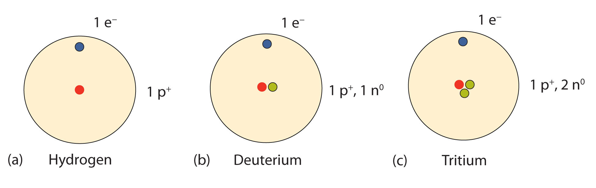

Now that we know how atoms are generally constructed, what do atoms of any particular element look like? How many protons, neutrons, and electrons are in a specific kind of atom?
First, if an atom is electrically neutral overall, then the number of protons equals the number of electrons. Because these particles have the same but opposite charges, equal numbers cancel out, producing a neutral atom.
In the 1910s, experiments with X rays led to this useful conclusion: the magnitude of the positive charge in the nucleus of every atom of a particular element is the same. In other words, all atoms of the same element have the same number of protons. Furthermore, different elements have a different number of protons in their nuclei, so the number of protons in the nucleus of an atom is characteristic of a particular element. This discovery was so important to our understanding of atoms that the number of protons in the nucleus of an atom is called the atomic numberThe number of protons in the nucleus of an atom..
For example, hydrogen has the atomic number 1; all hydrogen atoms have 1 proton in their nuclei. Helium has the atomic number 2; all helium atoms have 2 protons in their nuclei. There is no such thing as a hydrogen atom with 2 protons in its nucleus; a nucleus with 2 protons would be a helium atom. The atomic number defines an element. Chapter 21 "Appendix: Periodic Table of the Elements" lists the elements and their atomic numbers. From this table, you can determine the number of protons in the nucleus of any element. The largest atoms have over 100 protons in their nuclei.
What is the number of protons in the nucleus of each element? (Use the table in Chapter 21 "Appendix: Periodic Table of the Elements".)
Solution
What is the number of protons in the nucleus of each element? (Use the table in Chapter 21 "Appendix: Periodic Table of the Elements".)
sodium
oxygen
chlorine
How many electrons are in an atom? Previously we said that for an electrically neutral atom, the number of electrons equals the number of protons, so the total opposite charges cancel. Thus, the atomic number of an element also gives the number of electrons in an atom of that element. (Later we will find that some elements may gain or lose electrons from their atoms, so those atoms will no longer be electrically neutral. Thus we will need a way to differentiate the number of electrons for those elements.)
How many electrons are present in the atoms of each element?
Solution
How many electrons are present in the atoms of each element?
magnesium
potassium
iodine
How many neutrons are in atoms of a particular element? At first it was thought that the number of neutrons in a nucleus was also characteristic of an element. However, it was found that atoms of the same element can have different numbers of neutrons. Atoms of the same element that have different numbers of neutrons are called isotopesAtoms of the same element that have different numbers of neutrons.. For example, 99% of the carbon atoms on Earth have 6 neutrons and 6 protons in their nuclei; about 1% of the carbon atoms have 7 neutrons in their nuclei. Naturally occurring carbon on Earth, therefore, is actually a mixture of isotopes, albeit a mixture that is 99% carbon with 6 neutrons in each nucleus.
An important series of isotopes is found with hydrogen atoms. Most hydrogen atoms have a nucleus with only a single proton. About 1 in 10,000 hydrogen nuclei, however, also has a neutron; this particular isotope is called deuterium. An extremely rare hydrogen isotope, tritium, has 1 proton and 2 neutrons in its nucleus. Figure 2.6 "Isotopes of Hydrogen" compares the three isotopes of hydrogen.
Figure 2.6 Isotopes of Hydrogen
Most hydrogen atoms have only a proton in the nucleus (a). A small amount of hydrogen exists as the isotope deuterium, which has one proton and one neutron in its nucleus (b). A tiny amount of the hydrogen isotope tritium, with one proton and two neutrons in its nucleus, also exists on Earth (c). The nuclei and electrons are proportionately much smaller than depicted here.
The discovery of isotopes required a minor change in Dalton’s atomic theory. Dalton thought that all atoms of the same element were exactly the same.
Most elements exist as mixtures of isotopes. In fact, there are currently over 3,500 isotopes known for all the elements. When scientists discuss individual isotopes, they need an efficient way to specify the number of neutrons in any particular nucleus. The mass numberThe sum of the numbers of protons and neutrons in a nucleus of an atom. of an atom is the sum of the numbers of protons and neutrons in the nucleus. Given the mass number for a nucleus (and knowing the atomic number of that particular atom), you can determine the number of neutrons by subtracting the atomic number from the mass number.
A simple way of indicating the mass number of a particular isotope is to list it as a superscript on the left side of an element’s symbol. Atomic numbers are often listed as a subscript on the left side of an element’s symbol. Thus, we might see
which indicates a particular isotope of iron. The 26 is the atomic number (which is the same for all iron atoms), while the 56 is the mass number of the isotope. To determine the number of neutrons in this isotope, we subtract 26 from 56: 56 − 26 = 30, so there are 30 neutrons in this atom.
How many protons and neutrons are in each atom?
Solution
How many protons and neutrons are in each atom?
It is not absolutely necessary to indicate the atomic number as a subscript because each element has its own unique atomic number. Many isotopes are indicated with a superscript only, such as 13C or 235U. You may also see isotopes represented in print as, for example, carbon-13 or uranium-235.
Why is the atomic number so important to the identity of an atom?
What is the relationship between the number of protons and the number of electrons in an atom?
How do isotopes of an element differ from each other?
What is the mass number of an element?
The atomic number defines the identity of an element.
In an electrically neutral atom, the number of protons equals the number of electrons.
Isotopes have different numbers of neutrons in their nuclei.
The mass number is the sum of the numbers of protons and neutrons in the nucleus of an atom.
How many protons are in the nucleus of each element?
How many protons are in the nucleus of each element?
What are the atomic numbers of the elements in Exercise 1?
What are the atomic numbers of the elements in Exercise 2?
How many electrons are in neutral atoms of the elements in Exercise 1?
How many electrons are in neutral atoms of the elements in Exercise 2?
Complete the following table.
| Number of Protons | Number of Neutrons | Element Name | Isotope Symbol |
|---|---|---|---|
| 80 | 120 | ||
| 2 | hydrogen |
Complete the following table.
| Number of Protons | Number of Neutrons | Element Name | Isotope Symbol |
|---|---|---|---|
| 95 | 153 | ||
| 21 | potassium |
State the number of protons, neutrons, and electrons in neutral atoms of each isotope.
State the number of protons, neutrons, and electrons in neutral atoms of each isotope.
What is the mass number of a gallium atom that has 38 neutrons in it?
What is the mass number of a uranium atom that has 143 neutrons in it?
Complete each sentence.
Complete each sentence.
86, 74, 24, and 4
86, 74, 24, and 4
| Number of Protons | Number of Neutrons | Element Name | Isotope Symbol |
|---|---|---|---|
| 80 | 120 | mercury | |
| 26 | 29 | iron | |
| 1 | 2 | hydrogen |
69